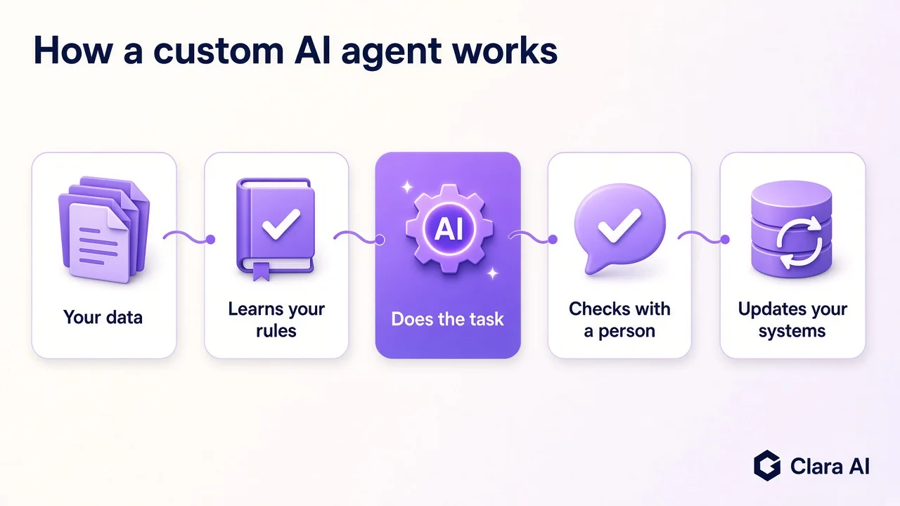
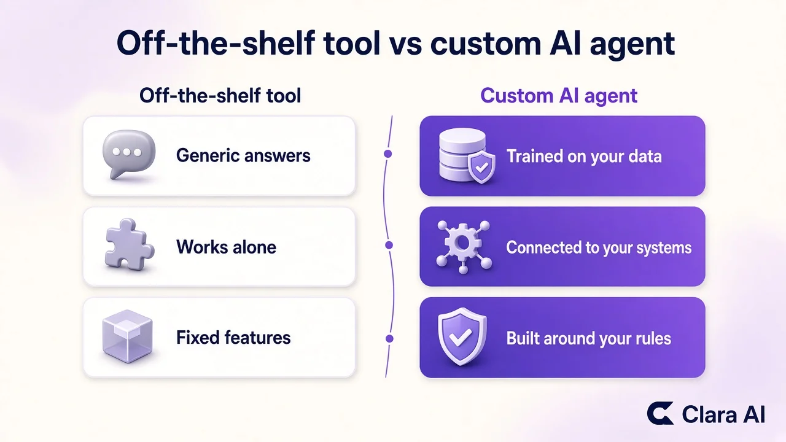

A custom AI agent is a software worker built around your own business. It learns from your documents and data, connects to the tools you already use, follows your rules, and hands anything unusual to a person. Think of it as a trained team member that never forgets the process.
Why do traditional businesses use custom AI agents?
Established businesses in distribution, manufacturing, retail, real estate and healthcare often run on email, phone calls, spreadsheets and a CRM or ERP that was set up years ago. Staff spend hours on repeat questions, follow-ups and data entry. A custom AI agent fits into those existing tools instead of replacing them, so you keep your processes and remove the repetitive work. You do not need a tech team, new software to learn, or a rebuild of your operations.

The agent learns your rules, does the task, checks with a person where needed and updates your systems.
How is a custom AI agent different from a chatbot or a SaaS tool?
An off-the-shelf chatbot or SaaS tool is built for everyone, so it answers in general terms and works in its own box. A custom AI agent is built for you. The differences are practical:
Trained on your material. It learns from your price lists, policies, product sheets, past emails and records, so it answers the way your business answers.
Connected to your systems. It reads from and writes to your CRM, ERP, email and spreadsheets, so work gets done rather than just discussed.
Follows your rules. Approval limits, tone, escalation triggers and off-limits topics are set by you.
Hands over to a person. When a case is unclear or sensitive, it passes the full context to your team.

A generic tool works alone. A custom agent is trained on your data and built around your rules.
What does a custom AI agent actually do day to day?
Most of the value comes from routine work that eats hours but follows a pattern:
Answers email inquiries. It reads incoming messages, finds the answer in your documents, and drafts or sends a reply. For a related example, see our guide to AI email support automation.
Follows up leads. It checks your CRM, contacts new inquiries by message or through an AI calling agent, and logs the outcome.
Updates records. It enters order, stock, visit or patient details into your ERP or spreadsheets so nobody retypes them.
Prepares daily reports. It pulls figures from your systems into a morning summary, which can feed an AI dashboard.
Books appointments. It offers open slots, confirms them and sends reminders through an AI chatbot on your website or WhatsApp.
Finds new customers on LinkedIn. Our AI LinkedIn Outreach Agent sends personal messages to the right people and passes their replies to you on WhatsApp.
Writes and publishes blog posts. Our AI SEO Agent publishes a new post on your site every day so more buyers find you on Google.
Where do people stay in charge?
You do. The agent works inside limits you define. Anything involving money, contracts, complaints, medical judgment or unusual exceptions goes to a person before any action is taken. Every action is logged, so you can review what was done and why, and you can change the rules or pause the agent at any time. In a setting such as healthcare, the agent handles scheduling and general information while clinical decisions stay with your staff.
What should you prepare before building one?
Gather these in order:
Pick one job. Choose a single repetitive task with a clear start and finish.
Gather your material. Collect the documents, FAQs, templates and past examples the agent should learn from.
List your systems. Note which CRM, ERP, email and spreadsheets it must connect to, and who administers them.
Write your rules. Define what it may do alone, what needs approval, and when to hand over.
Name an owner. Choose one person who reviews its work and gives feedback.
Define success. Agree what better looks like, such as faster replies or fewer missed follow-ups.
How does Clara AI build, deploy and manage custom AI agents?
Clara AI builds custom AI agents for businesses that do not have a tech team. We start with your documents, data and rules, connect the agent to your systems, test it with your staff, and then deploy it. After launch, we manage it, including monitoring, updates and improvements, so you do not need to hire engineers.
Clara AI delivers a first demo within 7 days of receiving your material. Our chatbots and calling agents work in English and Hindi.
Clara AI works with clients across India and the Gulf and is now working with companies in North America. Rustomjee, a real estate developer, uses a presales voice agent that follows up inquiries, and Apex Hospitals, a healthcare provider, uses an appointment chatbot.
Tell us the one job you would hand over first, and we will show you what it looks like working inside your business.